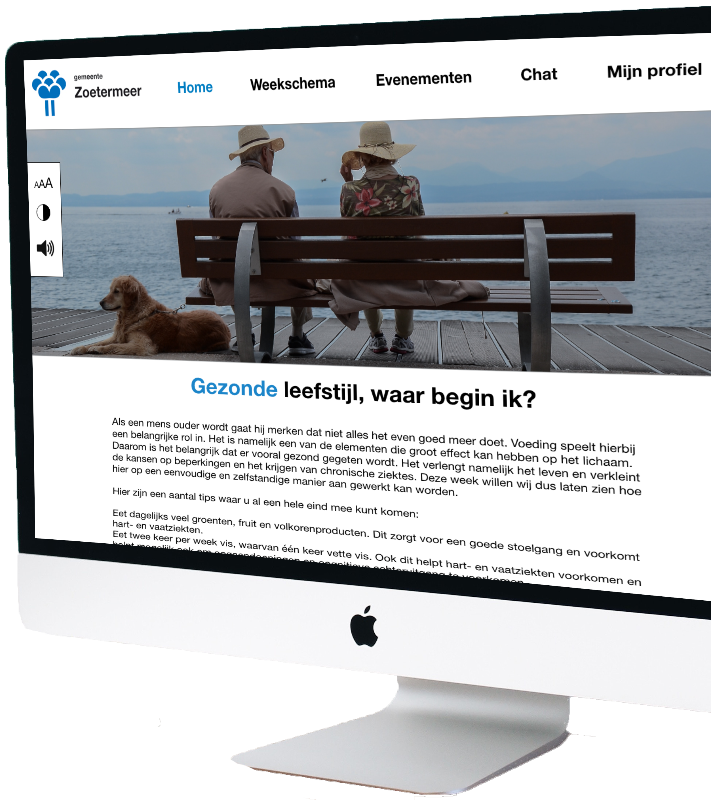
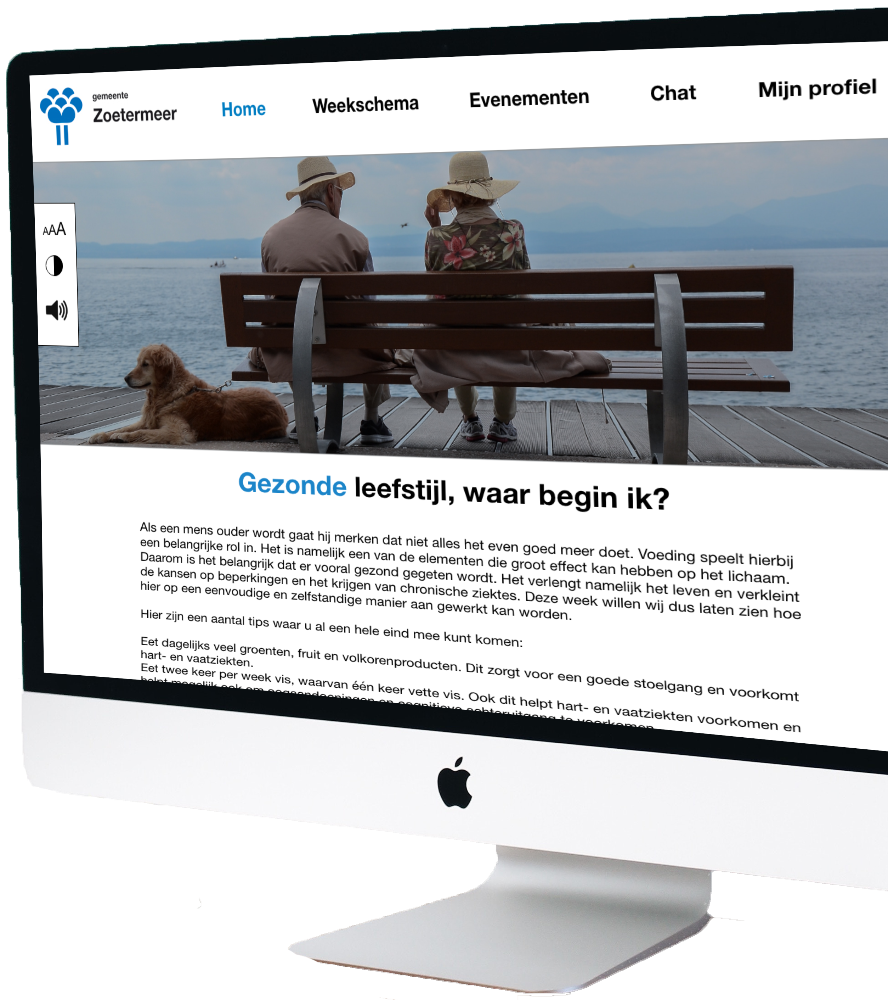
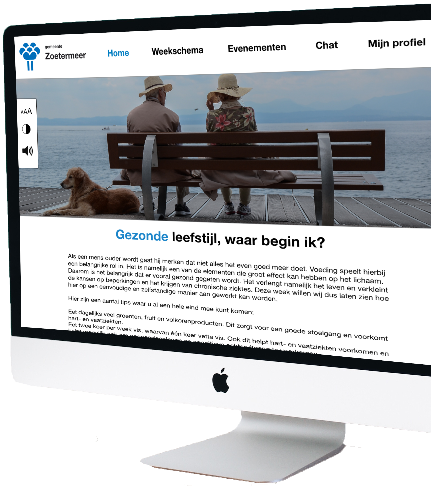

This project was an assignment for the course ‘Usable design’ and was done on behalf of the Zoetermeer community. The assignment is to inform the elderly, in a fun way, of their vitality. This way elderly will be able to take more care of themselves and live longer at home instead of a nursing home.

Problem statement
Vitality is important to elderly, they want to be healthy, socially involved and remain an active part of society. They also want to be able to do this independently, without needing any help from others.
But that isn't easy. The problem here is that they don’t have enough information about vitality to know how to live healthy and take care of themselves. This puts their health in danger, they come less in contact with other people and as a result they start participating less in social activities. They become lonely and/or depressed and they end up in nursing homes. This is exactly what the municipality of Zoetermeer wants to prevent. Elderly need to be able to understand what’s happening to them and how they can deal with any mental or physical problems. This way the elderly will be able to live longer in their own homes, without it becoming dangerous for them.
Goal statement
The goal here is to think of a digital application for the elderly of Zoetermeer that will give them the information they need to be and stay vital. This has to be done in a fun and inviting way, to help motivate them start a healthy lifestyle and bring them more in contact with others who also want to live healthier and more vital.
User needs
We first went and interviewed different people of the age 65 and older to find out what their needs are and what kind of application will have the most positief effect on them. The results of these interviews were:
They want to be more in contact with people of their own age.
Easily find information about activities close to them and what kind of support the community and other organizations offer them.
Share information about the activities they participate or will participate in.
Pay less for medical expenses.
These are the userneeds that will be applied to the application. Another result that we got out of the interviews is that most elderly like to use a computer more than any other device.
Product
With the userneeds and the information gotten out of the interviews and research, was this website made. The website contains a week calendar with different themes that have been put together to ensure that the target group becomes more social and vital. There is also an outing or meeting every month that fits the theme of that week where the participant can develop and maintain more social contact.
The calendar consists of assignments which have the purpose to help improve the elders vitality in a playful way. At the end of every week there is a challenge. This challenge is a little harder than the other assignments. By doing the assignment the user can earn points. By a certain amount of points they receive a part of a healthy package that has been put together. This goes on till they receive the whole package.
 
